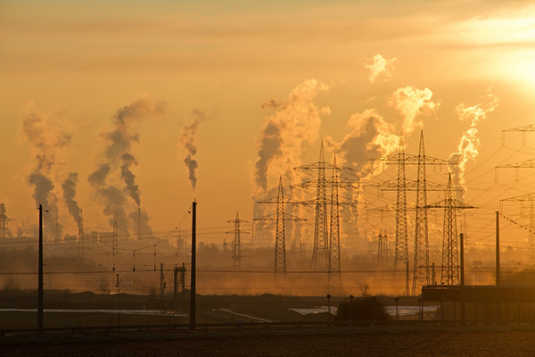

CORRIDA CONTRA O TEMPO
Uma reflexão sobre a relação humano-natureza
“O ambiente é o que somos em nós mesmos. Nós e o ambiente somos dois processos diferentes; nós somos o ambiente e o ambiente somos nós.”- Jiddu Krishnamurti
Em seu livro Sapiens: uma breve história da humanidade, o escritor Yuval Noah Harari deixa claro os impactos que os seres humanos causam no meio ambiente desde o cerne de sua existência. Humanos primitivos, os caçadores coletores, modificaram o ambiente no qual viviam a fim de garantir a sua continuidade na Terra. A priori, o que mais importava era a sobrevivência e a certeza instintiva de que seus genes passariam para a próxima geração.
Destoando de nossos antepassados, os ideais da sociedade moderna em relação à vida tornaram-se distantes da simples sobrevivência, sendo marcados, sobretudo, pelo “consumo, logo existo”. Tais ideais que para além de estruturais, tornaram-se estruturantes do nosso modo de vida, no sentido de que normalizam a relação de extremo desequilíbrio entre humanidade e natureza. Ilustrando bem essa situação, o relatório de mudanças climáticas da ONU mostra a inequívoca influência humana em desastres ambientais que vêm sendo engendrados ao longo dos anos. Aumento da temperatura global, aumento no nível dos mares, diminuição da qualidade do ar são exemplos memoráveis dessa influência.
Com a pandemia de COVID-19 pudemos perceber que, apesar de suas incomparáveis mazelas, houve um ponto de luz para evidenciar a relação intrínseca que cada ser humano tem com o meio ambiente. Constatamos que somos parte da natureza e que sua ruína é a nossa também, notabilizando que nossas atitudes transcendem a esfera individual, sendo importante analisar os impactos antropogênicos em escala global.
Desse modo, surge a necessidade de notar que durante os períodos mais rigorosos de quarentena e isolamento social, em que houveram grandes restrições quanto ao tráfego de pessoas e veículos, a qualidade do ar em grandes centros urbanos melhorou significativamente para esse curto espaço de tempo. Dentre os principais poluentes atmosféricos, destacam-se CO e NO2 advindos de veículos e indústrias, os quais, segundo um estudo realizado pela USP, houve uma considerável diminuição em sua emissão, como mostrado na tabela abaixo:
Entretanto, mesmo com a breve melhora em relação a emissão de gases poluentes, se continuarmos no atual ritmo de poluição, as previsões para um futuro próximo não são otimistas, tendo em vista que os últimos 5 anos foram os mais quentes registrados desde 1850. Inclusive, segundo o Painel Intergovernamental sobre Mudança do Clima (IPCC, na sigla em inglês), a temperatura global pode ter um aumento que supere 1,5º até 2040.
Portanto, antes de tudo, é necessário termos consciência da crise ambiental que estamos enfrentando para que, assim, possamos adotar medidas concretas para a amenização desse problema e vencer nossa corrida contra o tempo. Além disso, é de extrema relevância que a humanidade comece a ver a si mesma como parte inseparável da natureza. Medidas individuais não têm grandes impactos em situações estruturais, mas se nos vermos enquanto potencialidades, juntos, com certeza seremos capazes de ter um impacto positivo no meio ambiente.